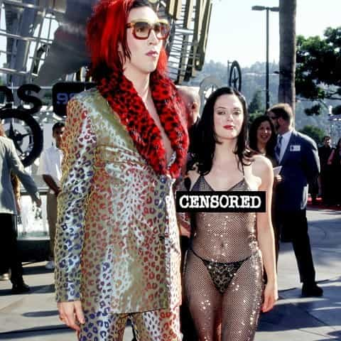
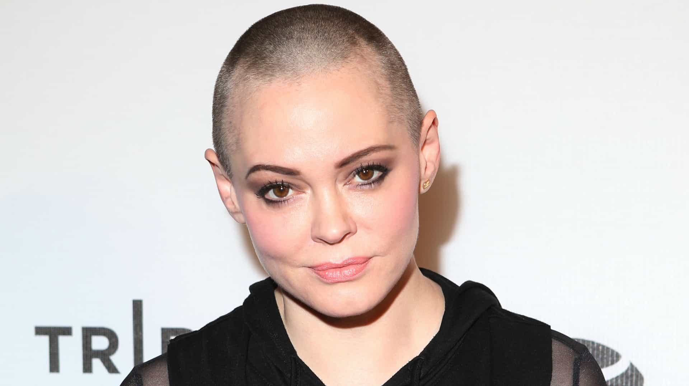
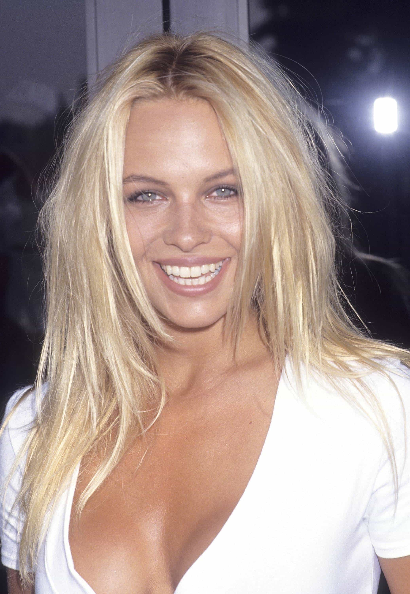
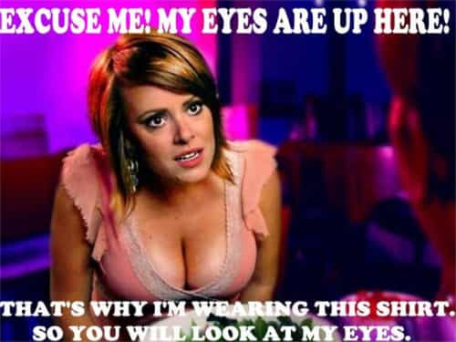

< < < Back
Women Only Hate Female Objectification When They Can No Longer Profit From It – Return Of Kings
With her Hollywood and silver screen career options all but dried up, former Charmed actress and constantly near-naked attention-seeker Rose McGowan is now a “leading” feminist. As you would expect, this transition occurred after her looks (which never approached those of co-star Alyssa Milano) had well and truly begun to fade. McGowan is not alone in making this spectacular shift. Pamela Anderson and professional SJW Natasha Devon are among a growing crowd of women who rail against “sexism” and “objectification” after years of trying, often very successfully, to sexualize their youth.
Seeking to cash in on her new-found fame as an unhinged SJW, Rose McGowan launched the “Rose Army,” a kind of personal cult that tries to hide the overt narcissism of its creator by supporting campaigns against “domestic violence” and “female objectification.” Full SJW mode is just a button away for her. For instance, she attacked gays for not being feminist enough and, probably projecting her jealousy over not landing a significant acting role for an eternity, claimed an X-Men movie poster promoted violence against women.
So now comes the task of reconciling the new Rose McGowan with the old one, whose self-objectification is best described by this infamous photo with ex-boyfriend Marilyn Manson:

Excuses, excuses…

Rose McGowan has tried to gloss over her past history of self-objectification and sexualization by saying she was merely a pawn of the patriarchy.
McGowan is now even blaming her past personal feuds, such as with a fellow Charmed actress, Shannen Doherty, on patriarchy, sexism and female objectification. Sadly, this very public attention-seeking, in which McGowan wrote Doherty an open letter, comes at the same time that the latter is suffering from cancer. But, you know, a girl’s gotta attention-whore, including when another girl she used to have cat-fights with is about to die.
Rose McGowan has a lot in common with Pamela Anderson. Ex-Playboy cover model Anderson, after an entire career made from taking her clothes off and otherwise selling her body as if she were competing for a championship, has now come out against pornography. She may not be bad for a gal nearing 50, but her best years are a good 20-25 years behind her. I would wager that Pamela Anderson hit 45 and spent the last several years in denial, before she decided to lambaste an industry currently lauding nubile girls in their twenties and not her. Pornography addictions are bad, but Anderson showing these new colors in 2016 is nothing short of a joke.
Anderson’s position can be summed up by the following two pictures:
Time when she did not condemn pornography:

Time when she condemns pornography:
Previously, a lot of attention has been paid to fat or unattractive girls being feminists. These activists are nominally against the sexualization of women, but appear to be driven primarily by envy and the need to diminish society’s praise of attractive females. Whilst there is a lot of truth to this, it only tells part of the story. The rank opportunism of feminism is perhaps better explained by women who once made a career from selling their appearances and have subsequently turned on the industries whose financial teats they used to suckle. And what better time to turn on these industries, whether they be the pornography, film, or modeling markets, than when your looks no longer allow you to actively participate in them?
This phenomenon runs parallel to female athletes both utilizing and complaining about their sexualization. Attractive tennis players like Sabine Lisicki (and unattractive ones like Serena Williams) have made careers out of wearing revealing on-court clothing, which is much more for show than practicality. But when the chance presents itself, Lisicki and others have moaned, like at this year’s Wimbledon, about how manufacturers’ designs make them show too much skin. Many of these girls may not have lost their attractiveness yet, but they pick and choose when objectification is bad, just like celebrities whose looks have abandoned them.
It’s not just famous people
Many Return Of Kings readers will remember Natasha Devon from her awful performance against Milo Yiannopoulos during a British Sky News debate on fashion mannequins. There seems to have been an eerie timing in Devon’s transition from self-described former model to SJW. She founded a so-called body image education program in 2006, in her mid-twenties. I don’t know about you, but this seems to be the sort of age when non-famous models in particular face the meat grinder due to competition from younger, fresher girls.
As she hurtled towards 30, Natasha Devon penned an article for Cosmopolitan magazine on bulimia, which morphed into a regular monthly column. Then came “The Self-Esteem Team” Devon created in 2012. Frequently with government funding, “The Self-Esteem Team” has essentially applauded obesity, Britain’s number one health crisis, and sought to re-engineer what humans are programmed by evolution to find attractive.
Devon, along with Anderson and McGowan, may chalk an anti-objectification epiphany down to age, experience or something similarly convenient, but the changes happened neither at the height of their self-sexualization careers nor during the pre-wall protracted slide. Always be on the look out for when exactly a woman took up feminist or general SJW activism.
When a woman complains about the “objectification of women,” it usually means a) she never had the goods to begin with, b) her goods weren’t enough to compete with other girls, or c) her goods are well and truly gone. There is a delicious irony to option c), as countless women will milk their looks until nature–or a half-decade of alcohol or drug-fueled benders–takes them away.
Feminism as projection

It is par for the course in today’s political climate that our enemies describe us as sad momma’s boys who play out failed encounters with women through our beliefs. Of anyone, Roosh has faced this entirely baseless criticism the most, all because our opponents have been unable to actually refute what he and Return Of Kings say.
We need to turn this idea of projection against feminists, even more than we have before. Modern-day feminism is itself the domain of women seeking easy comforts from an ideology that explains away either their own faults or their most primal fears about a harsh, uncertain world. For women whose looks are now washed-up, feminism enables them to label objectification as wrong and soothe the crushing blows that come from no longer getting the attention they were used to.
Rather than seeing these women as twisted and evil, it is better to perceive the behavior for what it is: desperation and the shocking realization that they are sexually irrelevant.
Read More: Female Danish Athletes Diminish Their Own Championship Victory By Taking Nude Photos